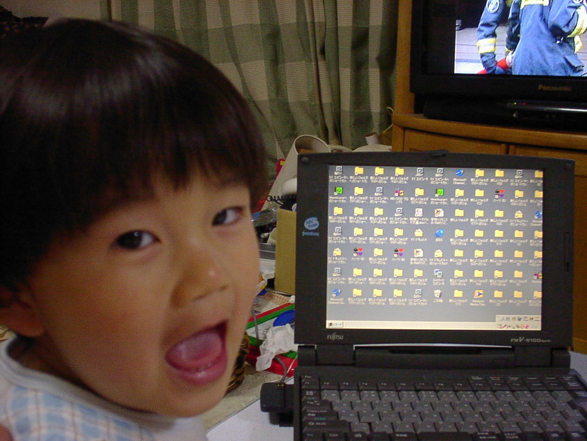

名前：鈴木豪（すずき ごう）
生まれ: 2000年
生まれ: 2000年
教育過程
- 2016-2020 松江工業高等専門学校，情報工学科
- 2021-2022 東京工業大学，情報理工学院情報工学系（学士課程）
- 2023- 東京工業大学，情報理工学院情報工学系情報工学コース（修士課程）
学位：学士（工学）
興味の対象
- 速いだけでなく地球にやさしい
- 一つのレイヤ/コンポーネントだけでなく三位一体で達成する最適化
今のところの専門分野（？）
- FPGA
- コンパイラ
- ハイパフォーマンスコンピューティング
- プログラミング言語
興味がある（だけ）
- 計算機アーキテクチャ
- ハイパフォーマンスコンピューティング
- ゲームAI
- コンパイラ
- プログラミング言語
- ソフトウェア工学
- コンピュータグラフィクス
- 画像処理
- コンピュータネットワーク
- データ圧縮
使ってるツール
上に行くほどだいたい頻繁に使う
プログラミング言語
- Haskell, C, F#, Rust
- C#, TypeScript
- Emacs Lisp, Python, Ruby, OCaml, Nemerle, Scala (Chisel)
- D, Visual Basic.net, C++17, Java, Perl
- Objective-C, Fortran, Julia, Crystal, Delphi/Free Pascal, Go
オペレーティングシステム
- Windows 10/11
- DragonFly
- macOS
- Debian
- FreeBSD
Webブラウザ
- Mozilla Firefox
- Microsoft Edge
テキストエディタ
- Visual Studio 2022
- GNU Emacs
- Visual Studio Code
- GNU nano
- ex editor
使っている計算機
現役
- ThinkPad P14s Gen 2, Ryzen 7 5850U, 32GiB Memory, Windows 11
- 自作PC, Ryzen 7 3700X, Radeon RX 560 4GB, 32GiB Memory, Windows 11
- Latitude 12 7275, Core m5 6Y57 (Skylake), 8GiB Memory, Windows 11
- ThinkPad E440, Core i5 4210M (Haswell), GeForce GT 740M, 16 GiB Memory, Windows 10
- HPのAMD Pumaマシン, Ubuntu MATE
- Eee PC Celeronマシン（Pentium M世代）, Windows 2000
- Core i3 4160T, 8GiB Memory, DragonFly BSD
- Core i3 4160T, 4GiB Memory, Debian
- NUC6i5SYH, Core i5 6260U, 16GiB Memory, Debian
過去
- ThinkPad A485, Ryzen 5 2500U, 16GiB Memory, Windows 10（電源死んだ）
- Bangbang Game, AMD Puma, 4GiB Memory, Windows 10（電源死んだ）
- ThinkPad E130, Core i3 (IvyBridge), 8GiB Memory, Windows 10（人に）
- MacBook Pro 2011 Early, Core i7 (SandyBridge), 8GiB Memory, Ubuntu MATE（がんばった）
- MacBook Air 2009, Core 2 Duo, 4GiB Memory, macOS High Sierra（人に）
- SOTECのノートパソコン, Core 2 Duo, 4GiB Memory, Windows 8.1（何かダメ）
- ThinkPad R61, Core 2 Duo T7100, 4GiB Memory, Windows 7（がんばった）
- TOSHIBA Satelite, Celeron M, Windows xp（Fan Error）
- VAIO, Celeron D, Ubuntu 9.10
- Celeron, Windows 2000
- FMV Pentium !!!, Windows 98SE